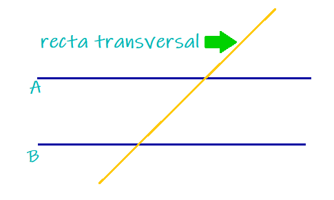

Clasificacion de Angulos
Recta Transversal
Cuando una transversal corta dos rectas se forman 8 angulos:
- Correspondientes
- Estan en la misma posicion en cada cruce. Si las rectas son paralelas miden lo mismo.
- Alternos internos
- Estan entre las dos rectas y en lados opuestos de la transversal. Si las rectas son paralelas, miden lo mismo.
- Alternos externos
- Estan fuera de las dos rectas y en lados opuestos de la transversal. Si las rectas son paralelas, miden lo mismo.
- Colaterales internos
- Estan entre las dos rectas y del mismo lado de la transversal. Si las rectas son paralelas, suman 180°.
- Colaterales externos
- Estan fuera de las dos rectas y del mismo lado de la transversal. Si las rectas son paralelas, suman 180°.
- Opuestos por el vertice
- Estan enfrentados cuando dos rectas se cruzan. Siempre miden lo mismo.
Angulos Adyacentes y Consecutivos
- Adyacentes
- Estan uno junto al otro, comparten un lado y un vertice.
- Generalmente, si forman una linea recta suman 180°.
- Consecutivos
- Son ángulos que comparten vértice y un lado.
- Están uno junto al otro, pero no necesariamente suman 180°.

Regresar a inicio